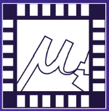
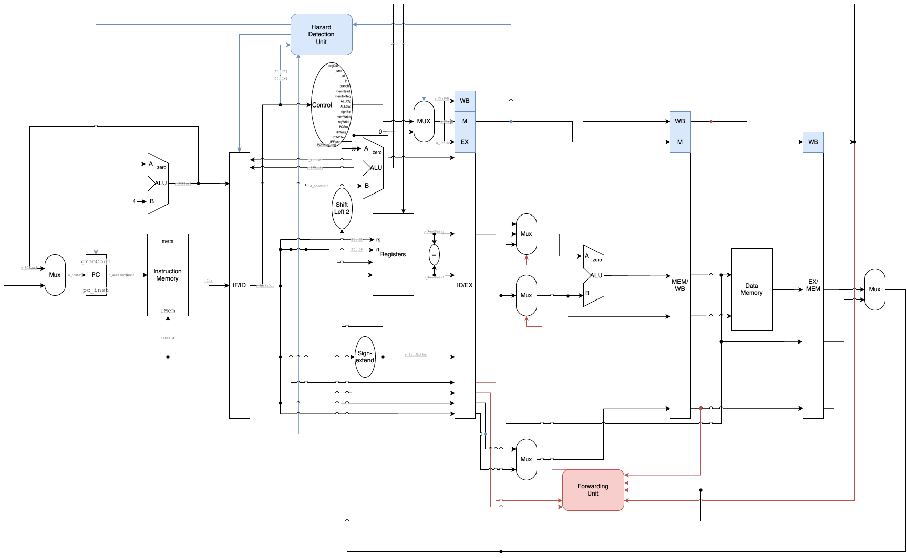
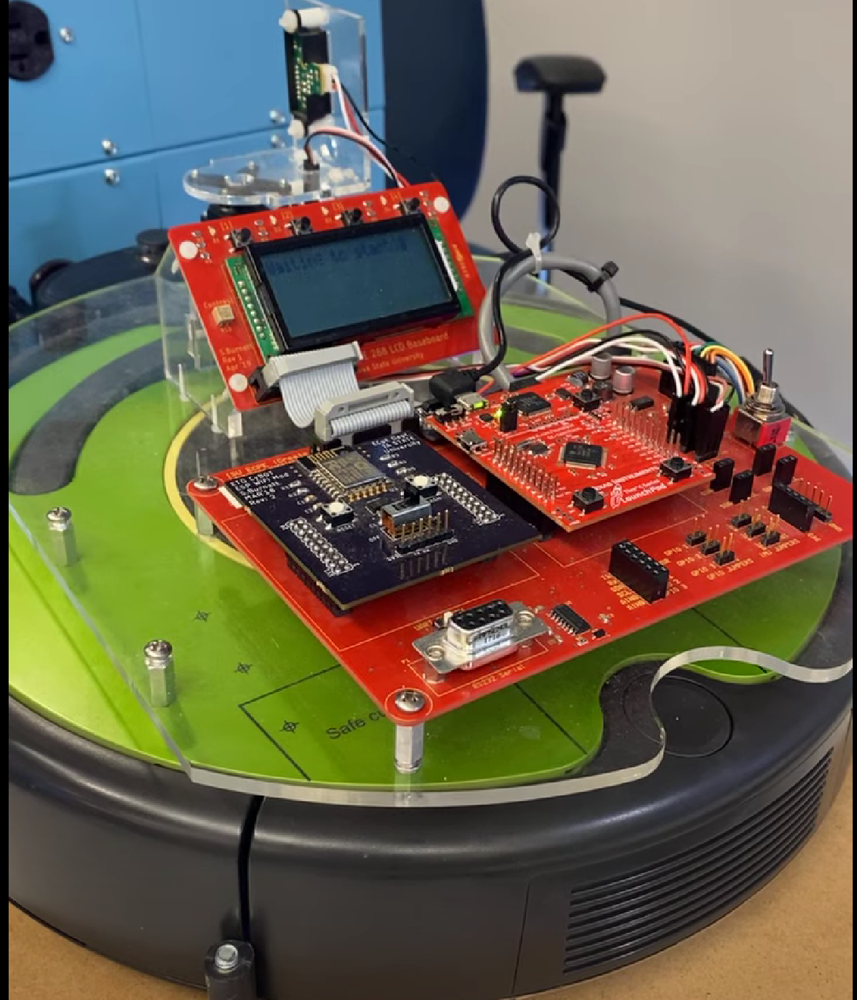

The first and most infulential project I worked on was my senior design project. Me and my team were tasked with creating a CTF (Capture The Flag), a tool used for cyber security learning, for microarchitecture attacks. This consisted of creating 6 different microarchitectural attacks to run on real hardware and a website to host the CTF with scoreing systems and unique user credintials to ensure fairness. My contribution to this project was creating one of the 6 attacks and a few minor contributions to our allocator which was responsible for handling the processes of the attacks. I learned a lot about the different types of microarchitectural attacks, how to communicate effectivelty in a group, and how to manage time and prioritize work efficently. This projet is an important step in helping others learn about these kinds of attacks since not a lot of security is focused on microarchitecture and a CTF is a great way to invite that learning and it's something that hasn't really been done before. A link to our projects website where you can learn more about it is here: SDmay26-38

With this project a group and I were tasked with building a MIPS processor using VHDL code. We had to make all the components ourselves and were restricted to using only basic gate functions for all the low-level components. While we all worked on the whole processor together, some major contributions I made were the shiffters, including the 32 bit barrel shifter, as well as creating the different sorting algorithms we had to run on it in assembly code. I learned a lot about the architechture of a processor during this project as well as how to write and understand assembly code.
This project and this class was all about android studio. We were tasked with creating and app and our team decided to create a mini-game hub app where you can compete against your friends or a global leaderboard in the different types of games offered. I created the visuals for one of the games as well as was responsible for creating the poker game based on Texas holdem on the website which puts you against an artificial oppenent. This project taught me about android studio and how to use it effectively and efficently. This may be incorrect since I don't own an android device, but I think one of my members put it on the android store, so feel free to check it out.

This was one of my first major project while in college. Our goal was to use embedded systems to program a modified Roomba to navigate an obstacle course using PuTTY to controll its movement. We weren't allowed to watch the robot and where it was in the course, which was randomized, so we had to create a GUI to take the scanned data and draw a map that we could use to navigate the course. I contributed a lot to the robots movement and it's scanner and all tweaking to get it to accuretly scan it's enviorment. This project taught me a lot about embedded systems as a whole, how to program using bits, understanding how different scanners like IR and Ping work, how to use PuTTY, and a little bit about MIDI music since the robot was capable of creating sound and it was an optional addition we could add for extra credit.